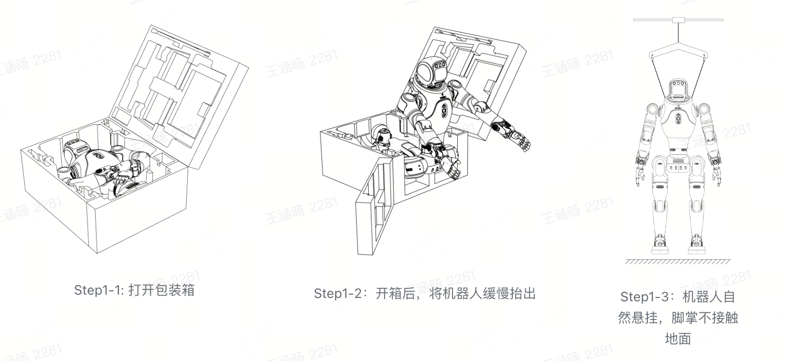
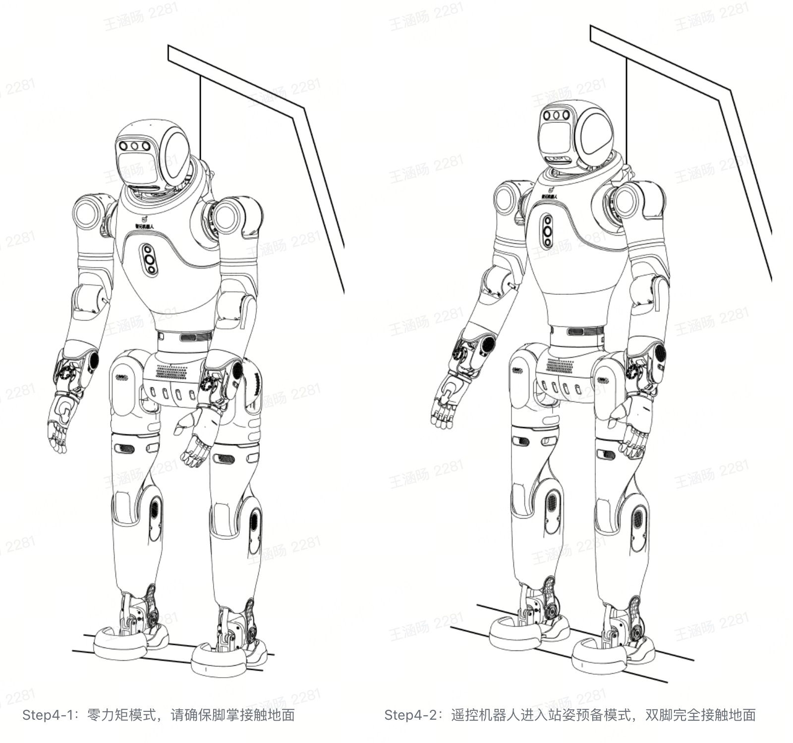
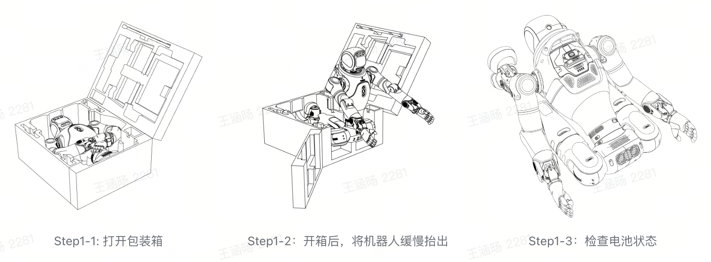
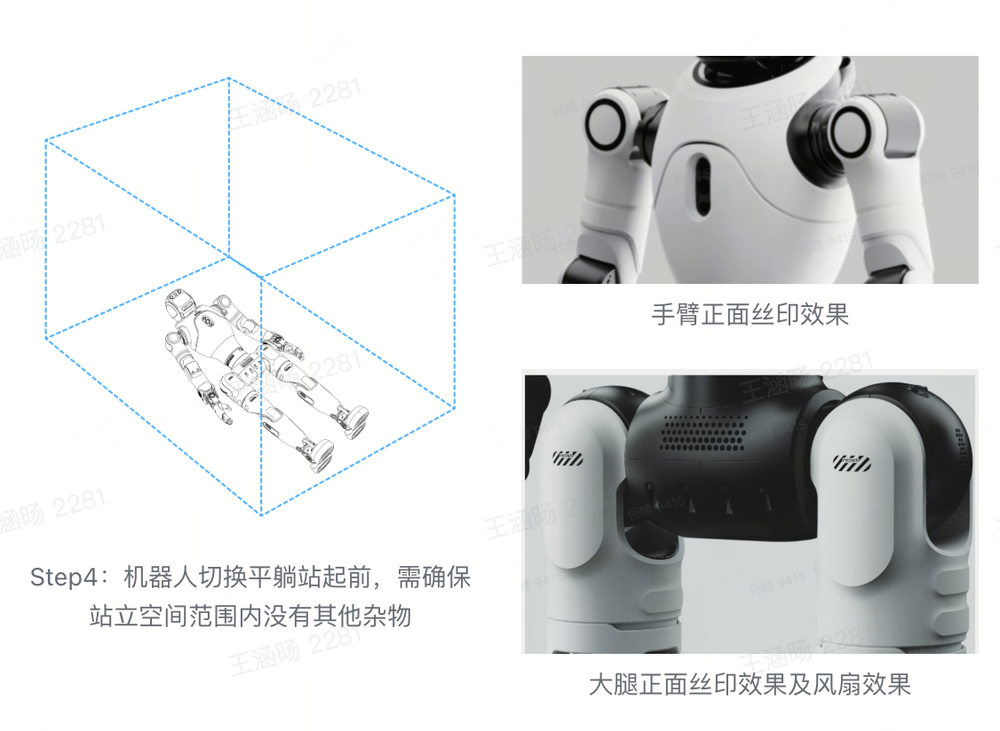

2.1 开机指南
2.1.1 吊起开机（需移位机）(SDK推荐使用)
Step 1：开箱抬出并规范摆放 按图示开箱，将机器人缓慢抬出。 使用保护架将机器人自然悬挂，确保其脚掌末端不接触地面。
{kind=link}

Step 2：安装电池 若未安装电池，可将电池从外向内插入机器人背部的电池槽，插至底部听到 “咔哒” 声即安装成功，安装成功后，请再次按压电池保证电池已经完全插入电池槽。

Step2：检查电池安装及安装电池
Step 3: 开机启动
开机时，请先确认电池电量＞2 格（电池电量＞50%）。
短按电池背部电源键唤醒设备，随后长按 5 秒完成开机。
机器人通电后，电池的 LED1~4 指示灯会在 2 秒内依次跑马亮起，随后稳定亮灭状态指示电池电量。

Step 3:按下开机按键
Step 4: 切换站姿预备（位控站立）模式
初始化：开机后需等待约 1 分钟，期间请勿操作。开机后所有关节进入零力矩状态，即表示初始化成功。
调整悬挂：初始化完成后，下降悬挂绳，使 X2 双足完全触地，进入站姿预备（位控站立）模式。
进入站姿预备模式：通过遥控器同时短按【L2+X】按键，确认触发站姿预备（位控站立）模式。
{kind=link}

Step 5: 完成机身下降
用电动移位器将机器人缓慢降下，直至双脚完全触地、悬挂绳完全放松且留有余量。
过程中需确保机器人垂直站立，不可出现倾斜。
Step 6: 进入稳定站立（力控站立）模式
重要
注意：在切换稳定站立（力控站立）模式之前，请确保机器人已经下降至地面，双脚与地面完全接触。
进入稳定站立（力控站立）模式：通过遥控器同时短按【R2+X】按键，触发稳定站立（力控站立）模式，具体姿态可参考对应图示。
释放挂钩：待 X2 站立稳定后，可完全释放悬挂挂钩。
稳定站立（力控站立）模式下，机器人轻微推动时可保持平衡，且支持身体运动控制。

Step6：遥控切换进入稳定站立（力控站立）模式
Step 7：进入走跑模式
进入稳定站立模式后，可实现 “推杆即走”：
左摇杆推上下左右，控制机器人行走方向；
右摇杆推动，控制机器人原地旋转。
2.1.2 平躺站起开机（无需移位机）
Step 1：开箱抬出并规范摆放
按照图示打开机器人的包装箱，缓慢将机器人抬出，避免碰撞。
将机器人按照下述图示姿态摆放，便于检查机器人背部的电池电量状态或放置电池。
{kind=link}

Step 2：安装电池 若未安装电池，可将电池从外向内滑入背部电池槽，滑至底部听到 “咔哒” 声即安装成功。安装后可尝试拉拔电池，确认其已完全卡紧。

Step2：检查电池安装及安装电池
Step 3: 开机启动
开机时，请先确认电池电量＞2 格（电池电量＞50%）。
短按电池背部电源键唤醒设备，随后长按 5 秒完成开机。
机器人通电后，电池的 LED1~4 指示灯会在 2 秒内依次跑马亮起，随后稳定亮灭状态指示电池电量。
Step 3:按下开机按键
Step 4: 机器人仰身平躺
将机器人置为仰身躺姿，需伸展其腿部与手部，确保机器人正面朝上。此时机器人处于零力矩模式。 *请参考下方图示，将头部、腿部、手臂、胸部、腰部、胯部摆至正确初始姿态，尤其注意下肢胯部正面需与整机正面保持一致。
触发平躺站起动作前，需确保机器人四周半径 0.5 米范围内无任何杂物，为动作执行预留充足安全空间。
{kind=link}

Step 5: 平躺站起开机
遥控器同时短按遥控【 ↑+△】，可实现机器人平躺站起，此时机器人进入稳定站立状态。

Step 5:机器人从平躺状态自动站起
Step 6：进入走跑模式
进入稳定站立模式后，可实现 “推杆即走”：
左摇杆推上下左右，控制机器人行走方向；
右摇杆推动，控制机器人原地旋转。
重要
平躺站起禁止执行场景：
当前暂不支持末端执行器为灵巧手或夹爪时，执行平躺站起动作，避免损坏灵巧手或夹爪部件。平躺站起前姿态要求：
执行平躺站起前，需将机器人调整为正面朝上的姿态。
同时确保头部、腿部、手臂、胸部、腰部、膝部等关键部位摆放正确，防止因姿态不当造成设备损坏。平躺站起地面环境要求：
需将机器人平整放置在 无坡度的硬质地面上，再启动平躺站起动作，确保动作过程稳定。
2.1.3 坐下站起开机（无需移位机）
Step 1：开箱抬出并规范摆放
按照图示打开机器人的包装箱，缓慢将机器人抬出，避免搬运中碰撞。
将机器人按照下述图示姿态摆放，便于检查机器人背部的电池电量状态或放置电池。
Step 2：安装电池 若未安装电池，可将电池从外向内滑入背部电池槽，滑至底部听到 “咔哒” 声即安装成功。安装后可尝试拉拔电池，确认其已完全卡紧。

Step2：检查电池安装及安装电池
Step 3: 开机启动
开机时，请先确认电池电量＞2 格（电池电量＞50%）。
短按电池背部电源键唤醒设备，随后长按 5 秒完成开机。
机器人通电后，电池的 LED1~4 指示灯会在 2 秒内依次跑马亮起，随后稳定亮灭状态指示电池电量。
Step 3:按下开机按键
Step 4: 机器人摆放至坐下姿态
姿态调整：
将机器人摆放为图示姿态。关键要求：
需将 头部、腿部、手臂、胸部、腰部、膝部 摆至正确初始姿态，尤其注意下肢膝部正面需与整机正面一致朝前。
需将机器人放置在 高度 35–40 cm 范围内的椅子上，请注意椅子需要有靠背支撑以保持机器人平衡。
此时机器人处于零力矩模式。需人工扶着机器人后把手，辅助保持平衡。
模式触发：
同时按下遥控器 【↑ + X】 按键，机器人进入坐姿预备（位控坐下）模式。请注意此过程中需要人工扶着机器人后把手，辅助保持平衡。

Step4：机器人摆放至坐姿状态，切换坐姿预备模式
重要
机器人坐姿要求：
需按照下图例，先通过遥控器将机器人调整至坐下位控状态。同时，需将机器人放置在高度约 35-40cm 的凳子上，确保放置位置稳定。触发坐下站起动作前，必须确认机器人的双脚已完全接触地面，避免因脚部悬空导致动作异常。肢体姿态要求：
需将机器人的头部、腿部、手臂、胸部、腰部、胯部等关键部位按照图示正确摆放，且保持正面朝前，防止姿态不当情况下切换对机器人造成损坏。
Step 5: 站起开机
操作遥控器，同时短按【↑+□】按键，机器人将执行坐下站起动作，动作完成后直接进入稳定站立模式。
重要
坐下站起过程中，需人工拉动机器人后把手辅助保持平衡，防止机器人摔倒。

Step5：机器人站起状态
Step 6：进入走跑模式 进入稳定站立模式后，可实现 “推杆即走”：
左摇杆推上下左右，控制机器人行走方向；
右摇杆推动，控制机器人原地旋转。